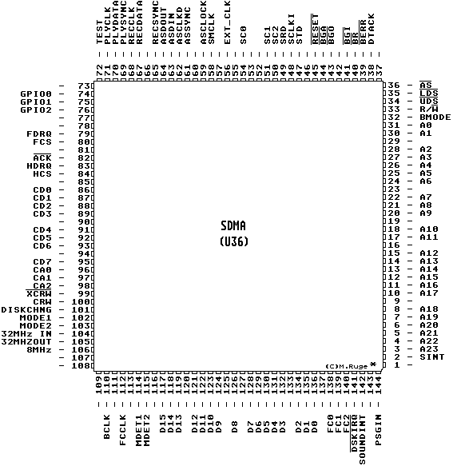

Previous
Next
TOC
Die Pinbelegung des SDMA-Chips im Falcon030
(SDMA - Sound und SCSI DMA)

Ein Tip für die Musiker unter uns:
Cubase Audio auf 48 KHz Samplingrate im geöffneten Monitor-Fenster
einstellen. Ist auch nach Stunden in der Pegelanzeige kein einziger
Ausschlag zu sehen ist die DMA Taktlage jetzt richtig.
Ansonsten muß der Clockpatch geändert werden, siehe hierzu im
Kapitel
Der Falcon030 Clockpatch nach.
Kapitel Die Pinbelegung des SDMA-Chips im Falcon030, Seite 1